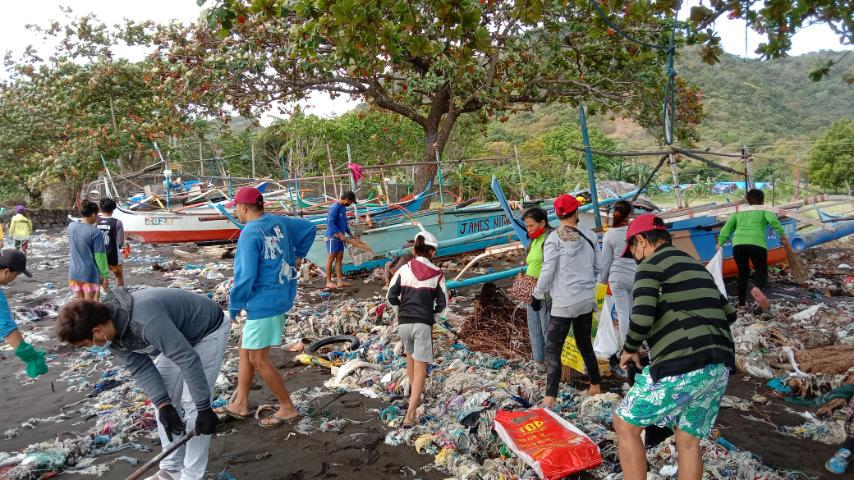
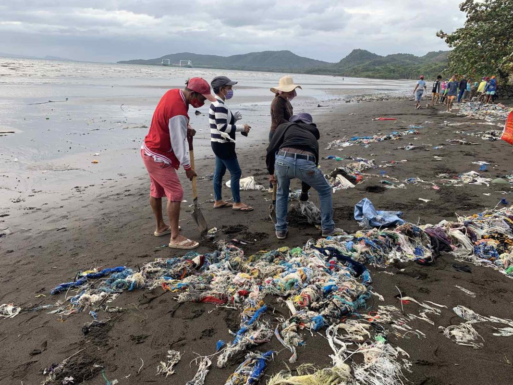
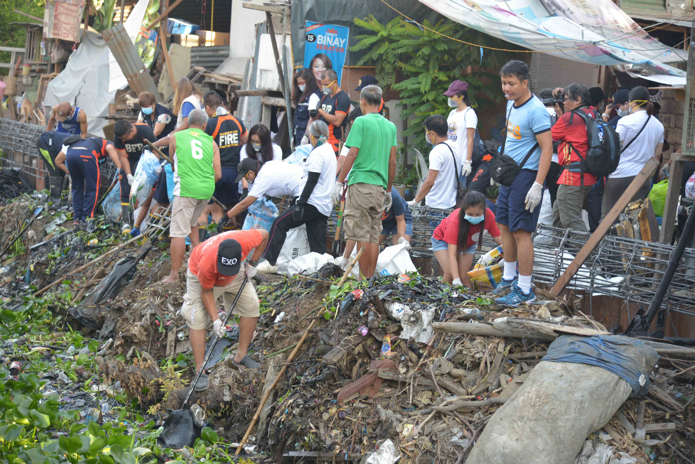
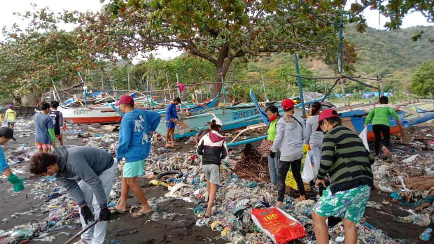
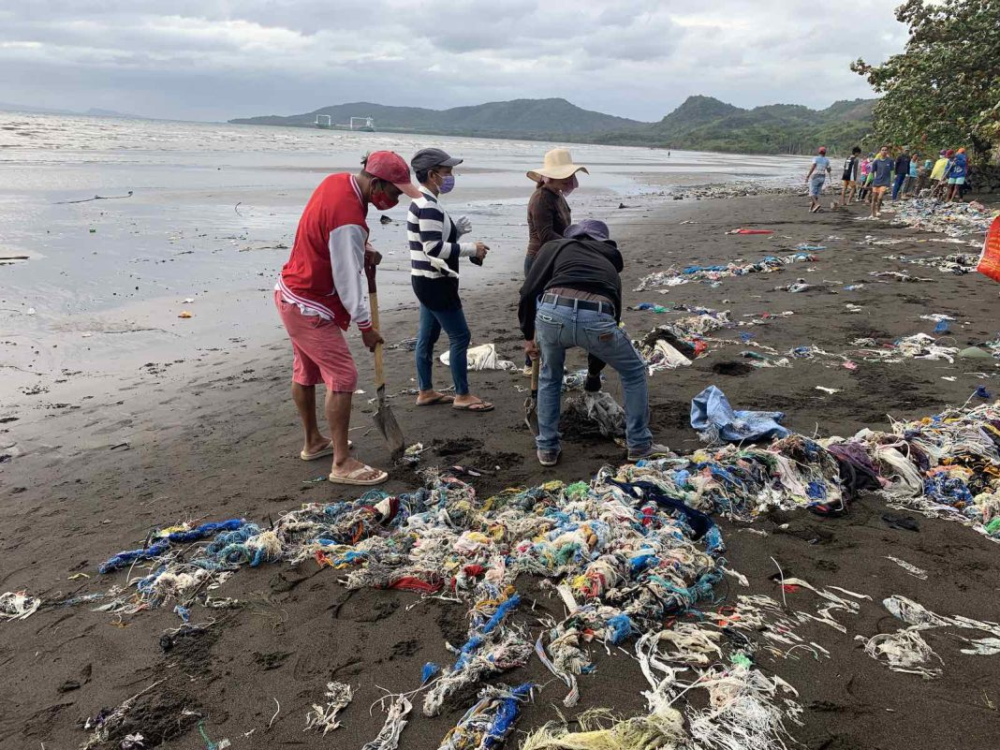
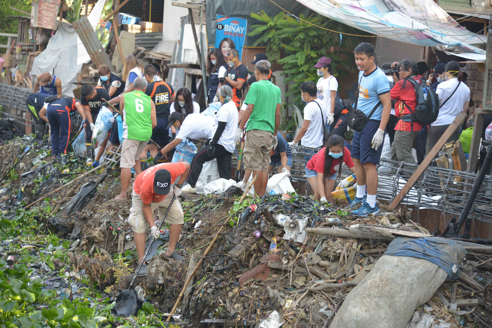

thávma thálassa
thávma thálassa is a place where you may find yourself drowning in discoveries of creatures on the sea bed.
A platform that gives you a glimpse of the unSEAn world under the surface.
thávma thálassa is a place where you may find yourself drowning in discoveries of creatures on the sea bed.
A platform that gives you a glimpse of the unSEAn world under the surface.
45 meters deep
100 Meters Deep
182 Meters Deep
The part of the ocean where there is enough sunlight for algae to ulitilize
photosynthesis. This zone reaches from the sea surface down to approximately 200 meters.

700 Meters Deep
396 - 1005 Meters Deep
860 - 4621 Meters Deep
494 - 1560 Meters Deep
500 - 2500 Meters Deep

4700 Meters Deep
4800 Meters Deep
5500 Meters Deep
It has a frigid temperature near freezing and crushing pressure. This extreme environment hosts unique creatures adapted to survive in its harshness.
8300 Meters Deep
8350 Meters Deep
8370 Meters Deep
The ocean floor in most areas lies from 4000 to 6000 meters below the surface,
but when it comes to trenches it extends to up to 11,000 meters deep. Waters in these areas are above freezing point and of complete darkness, thus species commonly found in these waters have bioluminesce as their source of light.
.jpg)
.avif) 







Researcher & Writer
Researcher & Writer
Web Developer & Layout Artist
Web Developer & Layout Artist
This website was made for educational purposes only.
The researchers and developers are learners and not yet professionals.